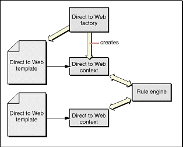

| PATH |

As mentioned earlier, a Direct to Web template is rendered using runtime information about the entities it displays. To translate that information into something you can bind to the template's dynamic elements, Direct to Web uses an instance of the D2WContext class called the Direct to Web context. This object has two functions: it maintains a state dictionary that holds the state of a Direct to Web template as it renders, and it provides values that you can bind directly to attributes of dynamic elements. Each instance of a Direct to Web template has an associated Direct to Web context.
As the Direct to Web template changes state as it is rendered, the Direct to Web context changes state with it. Specifically, the Direct to Web context uses an NSDictionary containing
The task and the entity remain constant while the template renders (with the exception of the query all template, for which only the task remains constant). The property does not stay constant, however. Consider an edit page. It displays the entity name and the entity's visible properties. To display the properties, the Direct to Web template iterates through them using a WORepetition. As it iterates, the Direct to Web context updates the information about the current property in its dictionary.
Each Direct to Web template has a Direct to Web context called d2wContext,
which implements the EOKeyValueCoding interface. Thus you can bind
directly to keys that the context responds to. For example, Listing 3-1 shows
the bindings file for a Direct to Web template that displays the
name of the entity.
String1 : WOString {
value = d2wContext.entity.name;
};
The Direct to Web context determines the values for the keys
(d2wContext.entity.name for example)
in one of three ways:
The state dictionary contains the following entries:
| Key | Description of Value |
task |
A string representing the current task. |
entity |
An EOEntity representing the current entity. |
propertyKey |
A string representing the key of the current property. |
attribute |
An EOAttribute representing the current attribute (null if
the current property is a relationship.) |
relationship |
An EORelationship representing the current relationship (null if
the current property is an attribute.) |
If the dictionary contains the key the template needs, the Direct to Web context resolves the key by returning the value in the dictionary. Otherwise the Direct to Web context resolves the key using one of the other ways.
Some keys can only be resolved using the application configuration
information, which is stored as a database of rules. For example
a rule to determine the property-level component for the dateReleased attribute
might be "If the task is 'edit', the entity name is 'Movie',
and the property key is 'dateReleased' then the value for the componentName key
is 'D2WQueryDateOperator'."
The Direct to Web context uses the rule engine to resolve keys that aren't in its dictionary. Figure 3-3 shows how the rule engine relates to the Direct to Web context. "The Rule System" contains detailed information on how the rule engine works.
Figure 3-3 Direct to Web Architecture
The rule engine also provides objects that have methods that
derive values from the Direct to Web context's state dictionary.
An example of a derived value is the name displayed for a property:
a method converts a property name like dateReleased to
a display string "Date Released". Using derived values is discussed
in more detail in "The Rule System".
© 2001 Apple Computer, Inc.